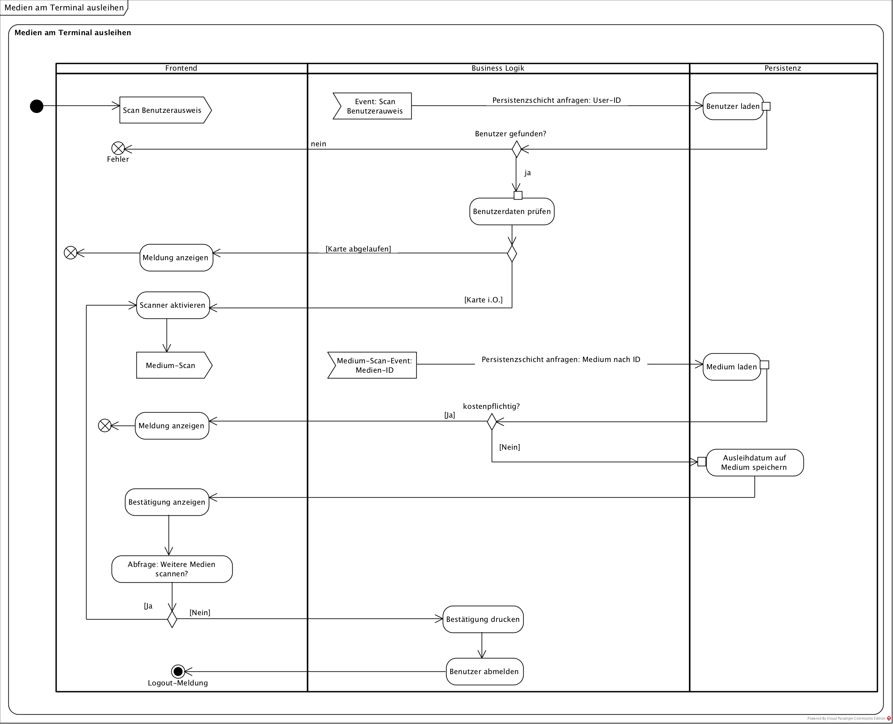

{% extends "../_base_template.html" %}
{% block title %}Lektion 8 - Szenarien mit Sequenzidagrammen entwickeln{% endblock %}

{% block sections %}
<section data-markdown>
<textarea data-template>
<i class="fas fa-flask"></i> Besprechung Hausaufgabe Aktivitätsdiagramm
=============================

Beispiellösung "Terminal am Scanner-Terminal ausleihen" der Hausaufgabe
* Aktionsnamen mit starkem Verb
* Keine Black Holes / Miracles (keine Knoten ohne Ein- oder Ausgänge)
* Eindeutige Bedingungen und vollständige Bedingungen



</textarea>
</section>

<section data-markdown>
<textarea data-template>
<i class="fas fa-graduation-cap"></i> OOD - Szenarien mit Sequenzdiagrammen darstellen
=============================

Heutiges Ziel
-------------

* Sie wissen, was ein "Szenario" ist
* Sie können Szenarien mit Sequenzdiagrammen abbilden
* Sie können eigene Szenarien für Ihr Software-Design entwickeln

### Hausaufgaben

* UML Sequenzdiagramme entwerfen
</textarea>
</section>

<section>
    <section data-markdown data-separator-notes="^Note:">
    <textarea data-template>
    <i class="fas fa-graduation-cap"></i> Was ist ein "Szenario"?
    ===========

    * Ein Szenario "verfeinert" einen Ablauf, einen Use-Case.
    * Sie finden sowohl in der **Analyse** wie auch in der **Design-Phase** eine Anwendung.
    * Szenarien decken **eine Variation** durch einen Use-Case / durch einen Ablauf ab (z.B. erfolgreiche Anmeldung). Weitere Variationen bilden ein **neues Szenario**
    * Sie helfen, **Operationen** / **Methoden** zu finden.
    * Sie können als **Test-Szenario** verwendet werden.

    </textarea>
    </section>

    <section data-markdown data-separator-notes="^Note:">
    <textarea data-template>
    <i class="fas fa-graduation-cap"></i> Szenarien mit Sequenzdiagrammen abbilden
    ===========

    * Sequenzdiagramme zeigen die **zeitliche Interaktion** zwischen einzelnen „Teilen“: Klassen/Objekte, Teilsysteme, Akteure, Abteilungen ...
    * Zum Sequenzdiagramm gehört eine kurze Beschreibung in der Form (Direkt im/auf dem Diagramm)
      * Name des Szenarios
      * Bedingungen, die zu dieser Variation führen
      * Ergebnis des Szenarios

    

    </textarea>
    </section>
</section>

<section data-markdown data-separator-notes="^Note:">
<textarea data-template>
<i class="fas fa-wrench"></i> Sequenzdiagramme entwickeln: VisualParadigm
===========

Kurze Einführung in Sequenzdiagramme mit VisualParadigm: Wir schauen uns die wichtigsten Funktionen im UML-Tool an:

* Erstellen eines Sequenzdiagrammes
* Life-Lines mit Klassen/Objekten
* Messags / Replies
* Selbstaufrufe
* Objekt-Instanzierung

</textarea>
</section>

<section data-markdown data-separator-notes="^Note:">
<textarea data-template>
<i class="fas fa-wrench"></i> Analyse-Szenario entwickeln
===========

Sequenzdiagramme sind wichtig, um die zeitliche Interaktion zwischen den beteiligten Kommunikationspartner / Objekten / Klassen aufzuzeigen.

**Aufgabe:**

Entwickeln Sie ein ANALYSE-Sequenzdiagramm für folgendes Szenario:

**Ein Buch an RFID-Terminal ausleihen: Benutzer ist gültig, Medium ist kostenpflichtig **

Der Benutzer versucht somit, ein (1) Buch am RFID-Scanner, welches kostenpflichtig ist, auszuleihen. Entwerfen Sie einen **Detaillierten Szenarioablauf** als Sequenzdiagramm.

 * Überlegen Sie sich, welches die Kommunikationspartner / Klassen / Objekte sind: Diese sind ev. noch zu entwerfen / zu definieren.
 * Überlegen Sie sich, wer der / die Akteure sind.
 * Überlegen Sie sich, wie das Szenario ablaufen muss:
   * In welcher Reihenfolge laufen die Operationen ab?
   * Welche Kommunikationspartner sind involviert?
 * Nehmen Sie dazu die **Anforderung des Bibliothekssystems** und die Use Cases zur Hilfe: Diese definieren die geforderte Funktionalität.
 * Nehmen Sie die [ **"Checkliste 007 Sequenzdiagramm"** ]( https://moodle.bztf.ch/pluginfile.php/26810/mod_folder/content/0/Checkliste_007_Szenario.pdf?forcedownload=1) zur Hilfe: Sie zeigt Ihnen, auf welche Kriterien Sie achten müssen.
 * Prüfen Sie die **Qualität Ihres Sequenzdiagrammes** anhand der "analaytischen Schritte" in der Checkliste.

Am Ende der Stunde (ca. 15min vor Schluss) schauen wir Ihren Stand an.

**Hausaufgabe**

Stellen Sie das Sequenzdiagramm fertig. Einreichen via Moodle.
</textarea>
</section>

<section data-markdown data-separator-notes="^Note:">
<textarea data-template>
<i class="fas fa-wrench"></i> Design: Szenario analysieren
===========

Sequenzdiagramme werden in der Design-Phase verwendet, um die zeitlichen Abläufe von Meldungen (Methodenaufrufen) zwischen Objekten / Klassen darzustellen.

**Haus-Aufgabe:**

Analysieren Sie das bereits bestehende TECHNISCHE Szenario vom Bibsys-Prototypen (durch Analyse des Java-Codes):

1. Starten Sie den Bibsys-Prototypen
2. Loggen Sie sich ein (Username: benutzer1, Passwort: 1), Szenario: erfolgreiches Login
3. Wählen Sie "1 Ausgeliehene Medien anzeigen"
4. die Medienliste wird angezeigt.
5. Der Benutzer wählt so lange "0", bis das Programm beendet wird.

Zeichnen Sie den gesamten Ablauf dieses Szenarios als technisches Sequenzdiagramm auf:

* Welche Klassen / Objekte sind involviert? Diese stellen die Kommunikationspartner dar.
* Welche Methoden werden in welcher Reihenfolge ausgeführt?
* Nehmen Sie dazu die **Anforderung des Bibliothekssystems** und die Use Cases zur Hilfe: Diese definieren die geforderte Funktionalität.
* Nehmen Sie die [ **"Checkliste 007 Sequenzdiagramm"** ]( https://moodle.bztf.ch/pluginfile.php/26810/mod_folder/content/0/Checkliste_007_Szenario.pdf?forcedownload=1) zur Hilfe: Sie zeigt Ihnen, auf welche Kriterien Sie achten müssen.
* Prüfen Sie die **Qualität Ihres Sequenzdiagrammes** anhand der "analaytischen Schritte" in der Checkliste.
</textarea>
</section>


<section data-markdown data-separator-notes="^Note:">
<textarea data-template>
<i class="fas fa-flask"></i>Hausaufgaben
===========

* UML-Sequenzdiagramm zum Analysemodell "Medium am RFID-Terminal ausleihen"
* UML-Sequenziagramm des Designmodells des Java-Prototypen (Einloggen, Auflisten der ausgeliehenen Medien)

</textarea>
</section>
{% endblock %}
